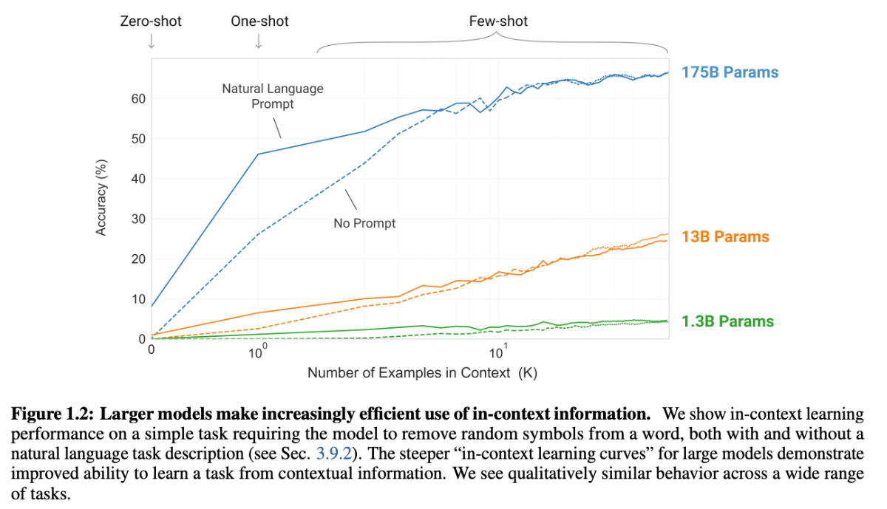

大規模言語モデル#
近年、GPTをはじめとする大規模言語モデルが自然言語処理分野において顕著な成果を挙げ、文章の生成や論理推論など高度な課題においても高い性能を示している。それに伴う、大規模言語モデルを活用することでより効率的に人間の行動や社会現象に関する理論や仮説の検証と発展し、新たな可能性をもたらすと期待されている。
今まで説明した通り、文脈を考慮した単語埋め込みである文脈化単語埋め込み(contextualized word embedding)を計算するTransformerを大規模コーパスで自己教師あり学習(Masked LMやNext sentence prediction)で事前学習し、そのモデルを下流タスクのテータセットを使って微調整する方法は、自然言語処理でよく用いられる手法です。
こうした事前学習した大規模なニューラルネットワークは、大規模言語モデルのように呼ばれます。
特に、2020年以降にパラメータ数およびテキストデータをさらに大規模することで、大規模言語モデルの性能も飛躍的に向上し、人間と自然にやりとりできるような能力を身につけました。これによって、ファインチューニングは行なわずに、事前学習された大規模言語モデルをプロンプト(prompt)と呼ばれるテキストを通じて制御することで下流タスク方法も一般的になりつつあります。
ここでは、大規模言語モデルの近年(2023年まで)の進展について解説します。進展が激しい分野のため、ここでの解説に基づいて適宜最新の情報も各自調べてほしいです。
モデルの大規模化とその効果#
大規模言語モデルの開発が進むにつれて、モデルに含まれるパラメータ数が飛躍的に増加してきています。
2018年に発表されたBERTは3.4億個、2019年のGPT-2では15億個だったパラメータ数が2020年のGPT-3では1750億、そしてGPT-4はは100兆個のパラメータを持つと言われており、加速的に増加していることがわかります。
こうした大規模化が行われている背景には、モデルの規模を大きくすることで性能が比例して改善していくという経験的な法則であるスケール則があります。
さらに、大規模言語モデルが一定の規模を超えると、タスクの性能が飛躍的に向上する現象も報告されています。こうした大規模化することで性能が改善し獲得される能力を創発的能力(emergent abilities)と呼ぶことがあります。
文脈内学習#
GPTのようなパラメータが非常に大きいモデルでは、学習時に入力される文章内には、様々なサブタスクが埋め込まれると考えられます。こうした文章の生成を学習することで、内包される様々な言語タスクへの処理能力の獲得が期待できます。 このアプローチはGPT-2から用いられており、文脈内学習(in-context learning)と呼ばれます。
モデルは新しいタスクをこなすための追加のトレーニングデータなしに（zero-shot learning）、または非常に少量のデータで（few-shot learning）多様なタスクを達成することが可能になります。
Few-shot learning: 推論時に少数（10から100）のデモンストレーションを与えます
One-shot learning: 推論時に一つのデモンストレーションを与えます
Zero-shot learning: 推論時にデモンストレーションは与えられず、自然言語によるタスク指示のみが与えられます
このように、従来ファインチューニングが必要される多くのタスクは、モデルにプロンプト(prompt)と呼ばれるテキストを入力して後続けするテキストを予測するという形で解かせることが知られています。
基本的には、タスクの説明と多くのデモンストレーションを与えることでモデルの性能が向上していく傾向が見られます。
zero, one-shotでも悪くない性能、few-shotでは一部ファインチューニングを用いたSOTAモデルに匹敵する性能を得ることが確認できました。

現在、一般的には、few-shot learningモデルの性能がファインチューニングによる教師あり学習モデルを超えることはまだ少ないが、ラベル付きデータの生成に費やすコストと時間を効率すると、プロンプトはファインチューニングによる教師あり学習の効率的な代替手段と考えられます。
chain-of-thought推論#
大規模言語モデルが苦手とされるタスクの一つに他段階の推論が必要となるマルチステップ推論(multi-step reasoning)があります。
複数の段階の推論が必要な際に、推論過程の例示を与えるchain-of-thought推論(chain-of-thought reasoning)を用いることで性能が改善することが報告されています。
具体的言えば、chain-of-thought推論では、回答を加えて推論過程を示す例示を与えて、モデルが回答を行う際に推論過程を含めて出力テキストを生成するようにします。
さらに、chain-of-thought推論の推論過程を人間が与えるのではなく、推論過程の生成を促す「Let’s think step by step」のような文字列をプロンプトの末尾に追加して、推論過程を生成されてから回答を抽出するzero-shot chain-of-thought reasoningも提案されています。
この方法を使うと、プロンプトを書き換えるだけで推論の性能を改善することができます。このことから、大規模言語モデルを使うあたってはプロンプトの与え方を工夫することが重要であることがわかります。
プロンプトエンジニアリング#
プロンプトを工夫することで、性能向上を図ったり、新しいタスクを解けるようにすることをプロンプトエンジニアリング(Prompt Engineering)と呼びます。
プロンプトエンジニアリングは、プロンプトの設計と開発に限らず、LLMsとのインタラクションおよび開発に役立つ幅広いスキルと技術を含みます。これは、LLMsとインタフェースすること、ビルドすること、能力を理解することに重要なスキルであり、LLMsの安全性を向上させたり、ドメイン知識や外部ツールを使用してLLMsの機能を拡張するためにプロンプトエンジニアリングを使用できます。
プロンプトエンジニアリングで可能な例やアプリケーションをカバーするにつれて、プロンプトを構成する特定の要素があることに気づくでしょう。
プロンプトには、以下のいずれかのコンポーネントが含まれることがあります。
命令 : モデルに実行してほしい特定のタスクまたは命令
文脈 : 外部情報や追加の文脈が含まれる場合があり、モデルをより良い応答に導くことができます。
入力データ : 応答を見つけたい入力または質問
出力指示子 : 出力のタイプや形式を示します。
最適な結果を得るためには、異なるキーワード、文脈、データを使用した異なる指示を試して、特定のユースケースやタスクに最適なものを見つける必要があります。
### 指示 ###
以下のテキストをスペイン語に翻訳してください。
Text: "hello!"
以下のテキストから場所の名前を抽出してください。
望ましいフォーマット：
Place: <comma_separated_list_of_company_names>
入力：「これらの進展は研究者にとって励みになっていますが、まだ多くのことが謎のままです。リスボンのシャンパリマウド・センター・フォー・ジ・アンノウンの神経免疫学者であるヘンリーク・ヴェイガ・フェルナンデスは、「脳と周辺部で
以下は、顧客に映画を推薦するエージェントです。興味を尋ねないで、個人情報を尋ねないでください。
顧客：私の興味に基づいて映画をお勧めください。
エージェント：
以下は、顧客に映画を推薦するエージェントです。エージェントは、上位のグローバルトレンド映画から映画をお勧めする責任があります。ユーザーの好みを尋ねることを避け、個人情報を尋ねることを避ける必要があります。エージェントがおすすめ映画を持っていない場合は、「申し訳ありませんが、今日お勧めする映画が見つかりませんでした。」と返答する必要があります。
顧客：私の興味に基づいて映画をお勧めください。
エージェント：
指示チューニング#
指示チューニング（instruction tuning）とは、様々なタスクのデータを指示と理想的な回答の組で構成されるデータセットを言語モデルに与え追加学習させることで、言語モデルの対話性能を向上させる技術です。
Flan(Finetuned Lanaguage Net)では、大規模言語モデルをデータセットを集約してフィインチューニングした結果、多数のタスクにおけるzero-shot学習の性能が向上したことが報告されています。
「Flan-T5」は、Google AI の新しいオープンソース言語モデルです。1,800 以上の言語タスクでファインチューニングされており、プロンプトとマルチステップの推論能力が劇的に向上しています。
人間のフィードバックからの強化学習#
RLHF（Reinforcement Learning from Human Feedback）とは、「人間のフィードバックからの強化学習」という名前の通り、人間の価値基準に沿うように、人間のフィードバックを使ってAI（言語）モデルを強化学習で微調整（ファインチューニング）する手法である。
強化学習#
強化学習 (Reinforcement Learning) とは、機械学習の一種であり、エージェントが動的環境と、繰り返し試行錯誤のやりとりを重ねることによってタスクを実行できるようになる手法です。この学習手法により、エージェントは、タスクの報酬を最大化する一連の意思決定を行うことができます。教師付き学習とよく似た問題設定ですが、与えられた正解の出力をそのまま学習すれば良いわけではなく、もっと広い意味での「価値」を最大化する行動を学習しなければなりません。
例えば、犬を訓練すること例として考えてください。強化学習の用語を使用すると、この場合の学習の目的は、犬 (エージェント) のしつけ (学習) を行い、ある環境の中でタスクを完了させることです。これには、犬の周囲の環境や訓練士が含まれます。
まず、訓練士が命令や合図を出し、それを犬が観察 (観測) します。続いて、犬は行動を起こすことで反応します。犬の行動が目的の行動に近い場合、訓練士は、おやつやおもちゃなどのごほうび (報酬) を与えますが、それ以外の場合、ごほうびは与えません。
しつけ (学習) を始めたばかりの頃は、犬はランダムな行動を取る傾向にあります。犬は観測した特定の状況を行動やごほうび (報酬) と関連付けようとするため、与えられた指示が「おすわり」であっても、ローリングなど別の行動を取る場合があります。
犬の立場から見ると、すべての合図に正しく反応して、おやつをできるだけ多くもらえるような状況が理想的です。
強化学習のしつけ (学習) とは、犬が何らかのごぼうび (報酬) を最大化する理想的な行動を学習するように、犬の方策を「調整」することを指します。学習が完了すると、犬は飼い主を観察し、獲得した方策によって、その場にふさわしい行動 (「おすわり」と命令されたらおすわりをするなど) が取れるようになります。
まとめると、強化学習の目的は、与えられた「環境」における価値（あるいは「利益」と呼びます）を最大化するように「エージェント」を学習させます。
RLHF（Reinforcement Learning from Human Feedback）#
RLHFの役割は、人間の好みや意図といった「人間の価値基準」がAIモデルに反映されることになります。具体的には、あるプロンプトに対してAIが生成した応答文の良し悪しを人間がランク付けし、そのランク付されたデータセットを使って「より望ましい応答文とはどんな感じの文章なのか」を評価できる報酬モデルを作成するわけです。
教師あり学習で既存の言語モデルをfine-tuning
指示チューニング済みモデルが出力したテキストに対して人手で優劣に順位付けします
このデータセットを使って、報酬(テキストの優劣を反映したスカラー値)を予測する報酬モデルを学習します
報酬モデルをこのように学習させることで、似たようなプロンプトが与えられた時に、より望ましいと評価された応答（＝よりランクが高かった応答）に近い応答文が、より報酬が高くなります。結果として、より好ましいと評価された応答文に近い応答文が生成される確率が高まります。